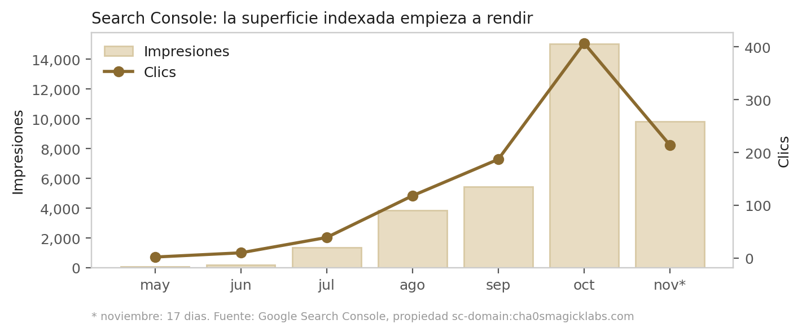
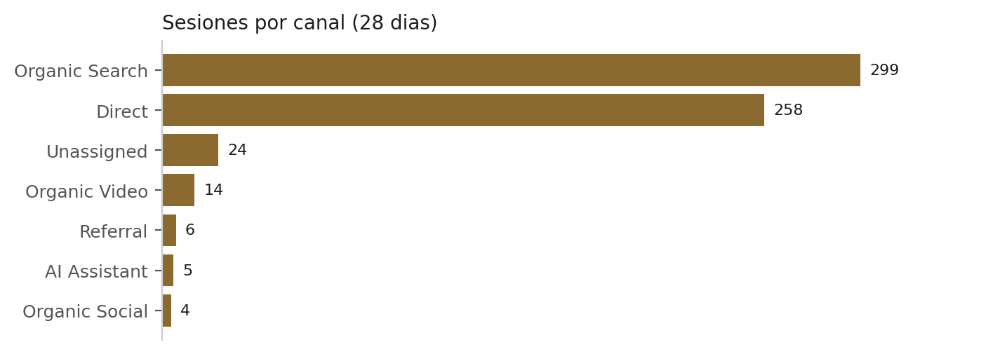
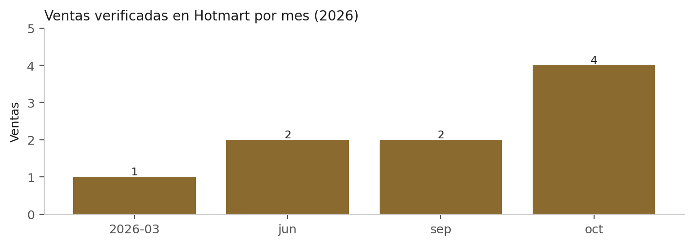
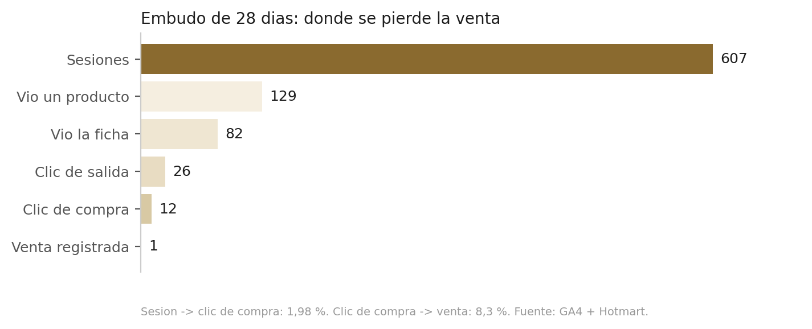

Rendición de cuentas 2026: qué se ha construido, qué dicen las cifras auditadas, dónde se pierde la venta y qué se hace en los próximos 90 días.
Este informe existe porque una empresa pequeña también debe rendir cuentas. No hay inversores externos todavía; los accionistas somos quienes hemos puesto el tiempo. Precisamente por eso conviene escribir las cifras en un documento que cualquiera pueda leer y rebatir.
En nueve meses Cha0smagick Labs ha pasado de una idea a un catálogo real: doce apps publicadas en Google Play, siete libros vendidos por Hotmart en dos idiomas, setenta herramientas gratuitas y 1.051 páginas indexables. Una sola app tiene valoraciones —5,0 con 23 reseñas— y el resto son nuevas. El sitio recibe hoy más de quince mil impresiones mensuales en Google, trece veces lo que recibía en julio.
Y sin embargo, la empresa vende poco. En 28 días, 607 sesiones produjeron doce clics de compra y una venta. Esa frase es el informe entero: el producto está construido, la distribución empieza a existir y la conversión es el cuello de botella. El 1,98 % no es un misterio ni una maldición del nicho; es el resultado de tres errores concretos que este documento detalla y que ya se han empezado a corregir.
La tesis para 2027 es simple y no depende de suerte: una app con 5,0 estrellas, un catálogo que nadie más tiene en este nicho y un embudo que hoy está roto en la mitad. Arreglar el embudo es más barato que comprar tráfico, y multiplica todo lo que venga después.
| Indicador | Valor | Fuente y ventana |
|---|---|---|
| Sesiones web | 607 | GA4, últimos 28 días |
| Clics orgánicos | 420 | Search Console, 28 días |
| Impresiones orgánicas | 15,050 | Search Console, octubre 2026 |
| Clics a Google Play | 10 | GA4, evento app_store_click |
| Clics a Hotmart | 12 | GA4, evento purchase_click |
| Ventas Hotmart verificadas | 9 | API de Hotmart, 2026 completo |
| Instalaciones Play (bandas públicas) | 270+ | Suma de mínimos de cada ficha |
| Suscriptores de Telegram | 1.998 | t.me/magiacaotica, 19-nov-2026 |
| Lista de correo | 7 (2 activos) | MailerLite, 19-nov-2026 |
El embudo tenía tres defectos verificables y ya están corregidos: un testimonio inventado y una urgencia falsa en la página de la herramienta, una nota media de 4,7 con «128+ reseñas» que no existía, y dos políticas de reembolso distintas (48 horas frente a 7 días). También se eliminó la promesa de un bundle de apps que Google Play no permite vender.
Cha0smagick Labs es un estudio de tecnomancia fundado en 2026: construye software ocultista y publica libros esotéricos. Su tesis de producto es una restricción deliberada — pago único, sin cuentas, sin rastreo, funciona sin conexión— en un nicho donde casi todo lo demás es suscripción, anuncio o aplicación vacía.
| Línea | Producto | Canal | Precio |
|---|---|---|---|
| Apps Android | 12 aplicaciones | Google Play | 2,99 – 14,99 $ |
| Libros PDF | 7 títulos + 2 bundles | Hotmart | 3,99 – 29,99 $ |
| Herramientas web | 71 herramientas gratuitas | cha0smagicklabs.com | 0 |
Las herramientas gratuitas no son filantropía: son la puerta de entrada. La página del generador de sellos recibe el 12 % de los clics orgánicos del sitio y es la que más gente envía a Google Play. El modelo completo depende de que esa puerta lleve a algún sitio.
Un fundador, sin plantilla, con infraestructura casi sin coste fijo: alojamiento estático, ventas gestionadas por Google y Hotmart, y contenido generado con apoyo de IA bajo revisión editorial. La división de investigación paranormal El Rincón Paranormal se integró en 2026 y aporta audiencia en español.
Doce apps publicadas, todas de pago único y sin publicidad. Las cifras de instalaciones son las bandas que Google Play hace públicas; no existe exportación por API de instalaciones exactas.
| Aplicación | Qué hace | Precio | Instal. | Nota |
|---|---|---|---|---|
| Sigil Maker: Chaos Magick | Sigilos caóticos, 6 alfabetos | $3.99 | 100+ | 5,0 (23) |
| Goetia: 72 Spirits Guide | Goetia, 72 entidades | $3.99 | 50+ | — |
| Rider-Waite Tarot AI Reader | Tarot, 78 cartas | $9.99 | 50+ | — |
| NOCTEM: Ghost Hunting Toolkit | Paranormal: EVP, EMF, spirit box | $14.99 | 10+ | — |
| Psi Gym: Test Zener & PSI | Entrenamiento ESP | $2.99 | 10+ | — |
| Viking Runes: 24 Futhark | Runas y tiradas | $3.99 | 10+ | — |
| Moon: Phases and Spells | Fases lunares y hechizos | $3.99 | 10+ | — |
| I Ching: 3-Coin Oracle | Hexagramas | $3.99 | 10+ | — |
| Dream Machine: Lucid Dreams | Inducción al sueño lúcido | $3.99 | 10+ | — |
| Astral Lab: Natal Chart Reader | Carta natal y tránsitos | $6.99 | 5+ | — |
| Eerie Roads: Paranormal Map | Mapa paranormal de campo | $9.99 | 5+ | — |
| Lucid Dream: Astral Projection | Diario y proyección | $8.99 | 0+ | — |
Fuente: fichas públicas de Google Play (consulta 19-nov-2026, mercado EE. UU.). La suma de mínimos de las bandas es 270 instalaciones; el máximo teórico de las mismas bandas supera las 1.500.
Sigil Maker concentra el 100 % de las valoraciones del catálogo. Eso tiene dos lecturas. La primera, que hay un producto que funciona y una reseña que lo dice con palabras: «he tenido resultados exitosos usando esta app para propósitos rituales». La segunda, que once apps no tienen ni una sola opinión: no porque sean peores, sino porque casi nadie las ha instalado. La palanca no es mejorar el producto, es llevar gente al que ya está probado.
Siete títulos en PDF, escritos por el fundador, vendidos por separado y en un bundle con un 49 % de descuento. El catálogo es la parte más difícil de copiar del negocio: 368 páginas en el tratado de servidores y más de 500 en el Codex.
| Título | Precio | Páginas |
|---|---|---|
| Chaos Magick for Absolute Beginners | $9.99 | 176 |
| The Complete Practical Treatise on Magical Servitors | $9.99 | 368 |
| Catholiconomicon | $9.99 | — |
| Codex Chaoticus | $4.99 | 500+ |
| Tarot Chaos | $9.99 | — |
| Liber Lvpinux | $3.99 | — |
| Mind The Gap | $9.99 | — |
| Suma individual / bundle | $58.93 / $29.99 | — |
El bundle es la única compra conjunta posible: Google Play prohíbe empaquetar apps, así que el libro es el único producto donde se puede subir el ticket medio de forma legítima. Un bundle a 29,99 $ equivale a 7,5 compras de la app estrella. Y sin embargo, en 28 días solo doce personas hicieron clic hacia Hotmart en todo el sitio.
El bundle ha vendido una vez en 2026, a 24,99 $ (precio anterior, antes de añadir el séptimo libro). El precio actual es 29,99 $ en las dos monedas del catálogo y está verificado en el checkout.
El sitio es, en volumen, la parte más grande de la empresa: 1.157 archivos HTML, 882 artículos de blog, 71 herramientas interactivas, 39 páginas en español y 1.051 URLs en el sitemap. Está construido para buscadores y para móvil: el 59 % de las sesiones llega desde un teléfono.

El crecimiento de impresiones es el dato más importante del año: de 73 en mayo a 15,050 en octubre. El CTR, en cambio, se quedó en el 2,7 %, y ahí hay un margen inmediato: con las mismas impresiones y un CTR del 5 %, los clics pasarían de 407 a unos 750 al mes.
La comunidad es el activo más desaprovechado. Hay casi dos mil personas suscritas a Telegram y 717 en el grupo, pero esa audiencia no está conectada al sitio: no hay secuencia de correo, no hay oferta de bienvenida y la lista de MailerLite tiene siete suscriptores.

| Canal | Tamaño | Uso actual |
|---|---|---|
| Telegram (canal) | 1.998 | Publicación de contenido; sin enlace medible a la tienda |
| Telegram (grupo) | 717 | Conversación; sin oferta |
| Correo | 7 (2 activos) | Captación con popup; conversión no medida |
| YouTube | n/d | Canal activo; suscriptores no verificables por API |
YouTube no se incluye como cifra auditada porque la página del canal no expone el dato sin sesión. El fundador reporta ~4.200 suscriptores; no se usa en ningún cálculo de este informe.
Si 1 de cada 20 suscriptores de Telegram comprara el bundle a 29,99 $, serían unos 100 pedidos: más que todas las ventas verificadas del año juntas. No hace falta tráfico nuevo para eso; hace falta una oferta clara y un enlace con seguimiento.
Todo lo que sigue sale de la API de pagos de Hotmart y cubre 2026 completo. Son nueve operaciones completadas, sin reembolsos registrados. El importe en dólares se calcula con tipos de cambio del 19 de noviembre y se marca como aproximado; la columna original es la que vale.

| Fecha | Producto | Importe | ≈ USD |
|---|---|---|---|
| 2026-03-07 | Manual de creación y activación de servidores | 219.24 MXN | $11.85 |
| 2026-06-01 | Manual de creación y activación de servidores | 85.84 MXN | $4.64 |
| 2026-06-23 | Tratado de Runas Cazadoras del Caos | 85.84 MXN | $4.64 |
| 2026-09-05 | Codex Chaoticus - A Complete Treatise on Chaos | 103.24 MXN | $5.58 |
| 2026-09-15 | Codex Chaoticus - A Complete Treatise on Chaos | 4.99 USD | $4.99 |
| 2026-10-06 | Manual de creación y activación de servidores | 7.70 AUD | $4.97 |
| 2026-10-11 | LIBER LVPINUX | 22.00 BRL | $4.07 |
| 2026-10-20 | BUNDLE Todos Los Libros ESP | 24.99 USD | $24.99 |
| 2026-10-26 | Ouija Cazadora del caos - By Zener de Cydonia | 3.99 USD | $3.99 |
| 9 ventas verificadas | — | $69.72 | |
El ticket medio real es de 7.75 $. La dispersión de monedas (pesos mexicanos, reales, dólares australianos) indica que Hotmart localiza el precio automáticamente: cualquier campaña de precios debe decir «se cobra en tu moneda local» o el comprador ve dos cifras distintas.
Google Play no expone un informe financiero por API para esta cuenta. Las instalaciones se conocen por bandas y los ingresos de apps no están en este documento; estimarlos multiplicando instalaciones por precio daría una cifra que no resistiría una revisión. La recomendación para el próximo trimestre es exportar el CSV de finanzas de Play Console y anexarlo, igual que se ha hecho con Hotmart.
Esta es la sección que importa. Durante 28 días, el sitio recibió 607 sesiones. De ellas, 129 vieron un producto, 82 abrieron una ficha, 26 hicieron clic hacia una tienda, 12 hacia una compra y se registró una venta.

| Paso | Personas | Paso anterior | Sobre sesiones |
|---|---|---|---|
| Sesión | 607 | — | 100 % |
| Vio un producto | 129 | 21,3 % | 21,3 % |
| Abrió una ficha | 82 | 63,6 % | 13,5 % |
| Clic de salida | 26 | 31,7 % | 4,3 % |
| Clic de compra | 12 | 46,2 % | 1,98 % |
| Venta | 1 | 8,3 % | 0,16 % |
La lectura honesta: el 8,3 % de clic a venta es normal para tráfico frío hacia un producto de 30 $. El problema está antes. Ocho de cada diez sesiones no llegan a ver un producto, y de las que lo ven, casi el 80 % no abren una ficha. El visitante llega buscando cómo hacer un sigilo, lee, y se va sin que nadie le muestre qué se vende.
No es una hipótesis: son cinco defectos encontrados en el código y en las páginas, con su corrección.
La página «Free Sigil Maker» dibuja 72 sellos goéticos; la app que ofrece convierte una frase en un sigilo caótico. El visitante escribe su intención, no encuentra dónde, y no relaciona lo que ve con lo que le venden. La tabla comparativa marcaba las mismas casillas para el producto gratuito y el de pago. Corregido: la comparación ahora dice qué dibuja cada uno y qué añade la app.
Había un testimonio firmado «David S., verified purchaser» que no existe en Google Play, una etiqueta «Limited time» sin fecha y un bloque automático con «4,7 ★ · 128+ reseñas» cuando la realidad es 5,0 con 23 valoraciones en una sola app. Corregido: la única cita que queda es la real, con enlace a la tienda, y el bloque automático muestra el dato verdadero.
La herramienta prometía 48 horas (que es la ventana de autoservicio de Google Play) y el resto del sitio, siete días. Corregido: una sola frase en todo el sitio que explica ambas cosas.
En la guía con más tráfico, el primer botón de producto aparecía tras el 40 % del artículo. En las páginas inyectadas, el botón «de colección» llevaba a la portada en lugar de a una tienda. Corregido: los bloques inyectados apuntan a Google Play y la ficha del producto ya coloca el botón antes de la objeción.
/ y /index.html reciben 69 y 43 sesiones: dos URLs para la misma página,
mitad de la señal para cada una. Pendiente: redirección 301, un cambio de una línea que
se aplicará en el próximo despliegue.
Una auditoría externa sostuvo que el sitio mezclaba dos identificadores de paquete de Google Play y que uno podía estar muerto. Se comprobó: ambos existen y son productos distintos (Sigil Maker y Goetia). No hay enlace roto. Se descarta.
El ingreso mensual se puede escribir como cuatro factores. Cada uno tiene un techo distinto y una palanca distinta.
Ingreso = sesiones × tasa de clic de compra × tasa de venta × ticket medio
| Factor | Hoy | Objetivo 90 días | Palanca |
|---|---|---|---|
| Sesiones / mes | 607 | 1.500 | CTR en buscadores, contenido que ya posiciona |
| Clic de compra | 1,98 % | 4 % | Oferta en la primera pantalla; herramienta alineada |
| Clic → venta | 8,3 % | 10 % | Precio, garantía y prueba social verificable |
| Ticket medio | 7.75 $ | 12 $ | Bundle como segunda compra, no como primera |
Con el ticket medio actual y la tasa de venta medida, el ingreso mensual depende así de tráfico y conversión:
| Sesiones / mes | 1,5 % | 2 % | 4 % | 6 % |
|---|---|---|---|---|
| 600 | 6 $ | 8 $ | 17 $ | 25 $ |
| 1.500 | 16 $ | 21 $ | 41 $ | 62 $ |
| 3.000 | 31 $ | 41 $ | 83 $ | 124 $ |
Cálculo: sesiones × tasa de clic × 8,3 % × 7.75 $. Solo libros; las apps se suman aparte. Las cifras son deliberadamente pequeñas porque el negocio es pequeño: sirven para decidir, no para prometer.
Duplicar la conversión sin tocar el tráfico lleva el ingreso de libros de 8 a 17 dólares al mes. Triplicar el tráfico sin tocar nada lo lleva a 24. Hacer las dos cosas y subir el ticket a 12 $ lo lleva a unos 60-80 $ mensuales solo en libros, con las apps como ingreso adicional. La conclusión para un accionista es incómoda pero clara: la empresa no necesita más producto, necesita distribución y una oferta que se vea.
| # | Iniciativa | Métrica de éxito | Semana |
|---|---|---|---|
| 1 | Redirección de /index.html a / y limpieza de duplicados | Una sola URL de home en GA4 | 1 |
| 2 | Generador de sigilos caóticos dentro de la página (sin iframe externo) | Uso de la herramienta y clic a Play | 1-2 |
| 3 | Oferta en la primera pantalla de las tres páginas con más clics | Clic de compra por sesión | 2 |
| 4 | Secuencia de bienvenida en Telegram y correo con el bundle como oferta única | Suscriptores y primeras ventas atribuidas | 3-4 |
| 5 | Escalera de precios: Codex 4,99 $ como entrada, bundle como segundo paso | Ticket medio y ventas de libros | 4-6 |
| 6 | Exportación mensual de finanzas de Play y anexo al informe | Ingresos de apps auditados | 6 |
| 7 | Pedir 20 reseñas a compradores verificados de la app estrella | Reseñas totales de 23 a 40+ | 8-12 |
Un solo comando, tres fuentes: python scripts/cro-weekly.py. Devuelve clics orgánicos,
sesiones, eventos del embudo y ventas reales de la ventana. La revisión es semanal, no mensual: con este
volumen, un mes es demasiado tiempo para descubrir que un cambio no funcionó.
| Riesgo | Impacto | Mitigación |
|---|---|---|
| Dependencia de Google (SEO y Play) | Alto | Telegram, correo propio y PDFs descargables |
| Una sola persona | Alto | Documentación en el repositorio; informes automatizados |
| Catálogo sin reseñas | Medio | Pedir valoración tras la compra; empezar por la app con 5,0 |
| Precios en varias monedas | Medio | Aviso explícito de moneda local en cada CTA |
| Contenido generado sin revisión | Medio | Política editorial y auditoría de texto asistido |
| Caída de tráfico por actualización de Google | Alto | No depender de una sola página; diversificar a vídeo y correo |
Las cifras de Search Console, GA4 y Hotmart se obtienen por API y se guardan en
projects/informe-2026/data.json con la fecha de generación. Cualquiera puede repetir la
consulta con los comandos del anexo. Las estimaciones se marcan como tales; las opiniones van en la
carta del fundador, no en las tablas.
| Dato | Fuente | Ventana |
|---|---|---|
| Sesiones, eventos, dispositivos | GA4 Data API, propiedad 521860259 | 28 días y 6 meses |
| Impresiones, clics, países, consultas | Search Console API, sc-domain | 28, 90 y 180 días |
| Ventas, producto, importe y moneda | Hotmart Payments API | 2026 completo |
| Instalaciones y notas | Fichas públicas de Google Play | 19-nov-2026 |
| Telegram | t.me/magiacaotica y grupo | 19-nov-2026 |
| Correo | MailerLite API | 19-nov-2026 |
| Inventario del sitio | Repositorio y sitemap | 19-nov-2026 |
python scripts/cro-weekly.py 28 · python projects/informe-2026/build.py
Los datos crudos están en projects/informe-2026/data.json. El PDF se regenera desde el HTML
con WeasyPrint; no hay cifras escritas a mano en las tablas.
Documento informativo elaborado por Cha0smagick Labs. No constituye oferta de valores ni asesoramiento financiero. Las marcas citadas pertenecen a sus titulares.